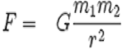
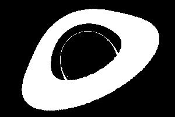

Black hole raytracer made using python from scratch. Rendered using image library PIL (Pillow).
Table of Contents
Abstract
For this final project for CS184, our group made a physics-based black hole raytracer utilizing Python's image library PIL (Pillow) to render the resulting images. The result was a black hole as shown through a surrounding accretion disk which is colored non-black. Our logic was based on both physics principles of black holes (i.e. using black hole mass to calculate event horizon radius for determining luminance, along with the effect of gravity on light) as well as graphics principles (i.e. ray casting/tracing; utilizing Euler integration to simulate light trajectory).
The program is run simply through running the main function, which will render an image of a black hole and accretion disk utilizing object classes written, and save it to an image (png) file.
Technical Approach
Components of black holes
Event horizon - the radius around the singularity in which light does not escape. This is determined by the Schwarzchild radius, which is simply twice the universal gravitational constant times the mass of the black hole divided by the square of the speed of light in a vacuum. The effect on light starts around 2.6 times this radius, which makes up the "photon sphere," where photons orbit the black hole to either get sucked into the event horizon, or gets redirected into space. This allows for us to see the back of the black hole even while viewing it from the front, and why the event horizon appears much larger that it actually is.
Accretion Disk - Made up by dust, gas, and other components. Orbits around the event horizon with great speed and heat, with a innermost stable orbit of a radius of 2.6 Schwarzschild radius (anything within the radius gets absorbed into the singularity). The same projection of the back happens to accretion disk, when viewing from a different angle, the back of the AD gets projected onto both the top and the bottom of the event horizon.
What is visible - A projected accretion disk surrounding the event horizon, within that there is a smaller photon ring visible as a ring of light.
Setup
Since this project involves using light rays cast from the camera to the scene, we had to use largely the same logic of raytracing
from project 3, albeit with a nonlinear light trajectory in order to simulate the intense gravity affecting light rays as they pass by a black hole.
However, writing it from scratch turned out to be a lot less tedious than porting over segments of code from project 3 itself, as we would have full control
over the pipeline, and wouldn't have to go through the trouble of figuring out GUI logic from project 3, the functionalities of which would be much more than we needed.
We created different classes for the objects needed (black hole, accretion disk, and background objects) in the scene, as well as the tools needed for the renderer
(camera, renderer, world). Lastly, we utilized the logic for spectrum and ray objects from project 3 in order to write our own ray.py
and spectrum.py classes.
Our objects comprise black hole, accretion disk, and background objects. Each object has at the minimum an origin and mass. Their compositions are as shown:
class BlackHole:
def init(...):
self.origin
self.mass
self.radius
def hit_by_ray(...)
def get_luminance(...)
class Disk:
def init(...):
self.origin
self.mass
self.inner_radius
self.outer_radius
self.normal
def _intersects_plane(...)
def hit_by_ray(...)
def get_luminance(...)
class Background:
def init(...):
self.origin
self.mass
self.normal
def _intersects_plane(...)
def hit_by_ray(...)
def get_luminance(...)
Based on research regarding the physics of light bending behavior surrounding black holes, we were able to deduct the manner in which we would be able to visualize the black hole along with its accretion disk (composed, in real life, of orbiting diffuse material but shown in our renders as a solid colored disk around the black hole sphere). We drew out the initial visualization goal using a painting application as shown:
|
|
As can be seen, the black hole is visualized as a black sphere, the radius of which would be the radius of the event horizon and photon sphere, and surrounded by an orange accretion disk, which is the result of orbiting masses as well as the effects of light bending that would cause a "ring"-like shape covering the top of and circling around the black hole.
Next, our group worked on the logic for writing our own renderer from scratch. This would allow us to do accurate raytracing
and to visualize our physics. Our final renderer in renderer.py utilizes the python image library Pillow (PIL) in order
to create a new image with inputted camera resolution (image size). Then we are able to cast rays from the camera into the world/scene,
allowing us to visualize the physics of light behavior around a black hole defined by a position, mass and radius. Our main
rendering pipeline is expressed as such:
- Using PIL, create canvas
- Create a list of objects to render
- Each one has an origin and mass
- Define a camera with position, FOV, and resolution, and world with a size
- Shoot a ray from each pixel in render
- Simulate light ray path (Euler integration)
- If it hits an object, return a luminance (spectrum) specified by the object
- If the operation times out (defined by a max number of timesteps) or the light ray exits the scene, return black
- Save this luminance to the canvas at the pixel
- Save to image
We did not utilize subpixels and supersampling, and thus the renderer itself was quite simple and implemented on a per pixel sampling basis. This was largely due to time constraints, as well as the complications of re-writing the render logic in a different language from C++. It would have also made the algorithm excrutiatingly slow, considering that we were using Python coupled with the lack of proper parallelization.
In order to implement the correct light behavior of a black hole, we would need to understand the fundamental physics behind it. Through research, we found that the radius of the black hole can be defined by the Schwarzschild solution to Einstein's field equations. This is expressed in the below equation, where G = gravitational constant, M = object mass, and c = speed of light. This radius would serve as the event horizon, wherein light does not escape no matter what. This is shown in our renderings through a solid color or texture different from the rest of the image (or simply black).
|
|
As for the actual raytracing logic, the simulate_to_end method in ray.py allowed us to utilize light physics as well as
time stepping along with the raycasting hit logic as dictated by Euler Integration for the objects in the scene: the accretion disk, background, and the black hole itself. simulate_to_end
outputs a Spectrum object which is the appropriate color for visualizing different objects. We initially generated a visualization of light trajectory using a python script that
applies the Euler integration and timestepping logic that would allow us to generate nonlinear light rays, as affected by the physics of black hole gravity.
|
|
We planned a sequence of operations in order to implement the raytracing logic for the black hole from the beginning:
- We cast a light ray from the camera, use Euler integration to simulate its trajectory, until it is:
- Eaten by the event horizon of a black hole
- Hits the accretion disk or background: calculate disk/background luminance
- Exits the skybox
To implement the accretion disk, because the accretion disk is defined by a plane and 2 radii (inner and outer), we had to implement plane intersection logic to
see if the ray intersection position lies within our specified radii. This was done through similar raytracing plane intersection logic explored in project 3. This required the accretion disk to also have a normal vector, which we defined in our world to be (0,1,0) by default (X being the horizontal axis, Y the vertical, -Z facing the camera, and Z facing away from the camera).
If a specific ray hits the plane within the 2 radii, we are able to return a Spectrum luminance.
For the accretion disk luminance, we considered two options: either coloring it using a solid spectrum, or, if we had enough time at the end, implementing realistic redshifted luminance as according to the composition of materials in the accretion disk, since the disk contains all elements and has an extremely high temperature (in the magnitude of thousands of millions of Kelvin). Thus, we did some research to find the different appearances of blackbodies under different temperatures up to 10000K - and we ended up finding a website[1] that included a spectrum of different blackbody colors at different Kelvin temperatures, which allowed for a texture comprising of a spectrum of colors. We would also address the redshift from orbital motion according to the special-relativistic redshift formula:
|
|
However, given time constraints and other issues discussed in the Problems Encountered section, we ended up compromising a realistic redshifted illuminance with a manually colored disk that has a spectrum fading from one color to another. This would at least allow us to create the effect of a more realistic coloring, as gravitation force for an object would be weaker along an increasing distance from its center (according to the gravitational force equation), and the accretion disk would be increasingly diffuse with less concentrated objects.
|

|
Problems Encountered
We ran into several problems along the course of working on this project, one of which was a large setback due to our already existing time constraints. With our lack of experience writing a full renderer in Python, we did not know initially what tools we had at hand and what we should use. One of our initial team members was going through personal issues and therefore had to withdraw from Berkeley for the semester, after having helped us plan the initial rendering pipeline with his knowledge in the libraries and general logic needed. Due to the unexpected circumstances and the fact that we decided to implement the renderer from scratch, we had to consider utilizing components of project 3 as well as porting our code over to C++, or do as much research as we can regarding Python imaging libraries and how to use them. Despite this initial setback, however, we were able to get help from this team member, Tiger, in order to complete the renderer and be able to visualize our raytracing logic. This allowed us to create the rest of our project with more ease. However, in the end, we ended up scrapping parts of our initial project plan, which was to implement realistic accretion disk texture mapping with redshift illuminance, as well as making an animated version of the black hole in order to most accurately simulate its interaction with light.
Lessons Learned
We learned that, with writing a project from scratch, there are difficulties in the initial stage of planning the exact structure of the project in the full picture. However,
once our goal is broken down, the components of the project are able to be considered individually, and we were able to prevail in implementing the meat of the code with a
solid plan for the backbone structure. We also learned that, deviating from the linear light trajectories used in project 3, implementing nonlinear light interaction using a
physics based approach was a challenge - however, with enough research and sampling the results of different values of parameters (such as delta t in the ray.py class),
we were able to correctly simulate the light trajectory and finally implement that with ray-object intersection to create the appropriate results.
Results
Our renderings all comprise black holes with the mass of the sun (approximately 3000m in event horizon radius).
With colored grid
The following is a series of renderings of the black hole with a grid background showing the light interaction at different camera angles.
|
|
|
|
|
|
|
|
Note the black between the edge between the accretion disk and the photon sphere. This is likely due to the light in this region traveling infinitely around the event horizon, which causes our simulation to time out and return a null Spectrum. It may also be due to light rays exiting the scene in a different direction than the background (which only exists in the xy plane behind the black hole).
Black and white renderings
The following is a rendering of the black hole visualized using only the light interaction from the accretion disk.
|
|

|
Other renderings
The following are fun renderings we did just to test the effects of altering physics parameters on light interaction. Thanks to our dynamic light raytracing, it's able to do these without much extra computation.
|
|
|
Note the small slivers from each side. |
|
enough to appear to be fusing together despite the event horizons are not actually touching each other. Note the rings around each side. |
|
The pink one is behind the red one. Note the dramatic increase in radius and the very small ring of red around the pink one. |
Final renderings
The following are renderings with full realistic space backgrounds (achieved through nearest neighbor sampling of an image) as well as a black hole image closely resembling the coloration of the real black hole image captured recently. The orange coloration was done post-process in Photoshop.

|
resemble the original picture |
References
[1] Charity, M. (2016). "What Color is a BlackBody?" Retrieved April 27, 2018 from: http://www.vendian.org/mncharity/dir3/blackbody/. [2] Lewis, A. (2016). "GPU-Accelerated Black Hole Simulations". Retrieved April 27, 2018 from: https://devblogs.nvidia.com/gpu-accelerated-black-hole-simulations/. [3] Event Horizon and Accretion Disk. (2019). Retrieved April 27, 2018 from: https://www.physicsoftheuniverse.com/topics_blackholes_event.html.Contributions
- Tiger Cao (withdrawn): Wrote python script for light trajectory, wrote backbone structure of rendering and object simulation pipeline.
- Arman Tarkhanian: Implemented raytracing simulation logic based off our research and initial Python script, wrote luminance functions for each object, implemented background rendering (particularly checkerboard and starry texture patterns). Also helped with thought process of what to render to show final results.
- Lulu Wang: Made entirety of final website, helped research references, helped render final images and deliverables, helped research accretion disk redshift illuminance.
- Casper Yang: Researched (a lot of the) black hole and accretion disk physics, made deliverables video, helped plan coding structure of project such as how each object should be laid out etc.